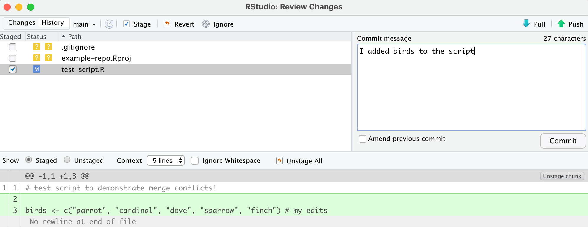
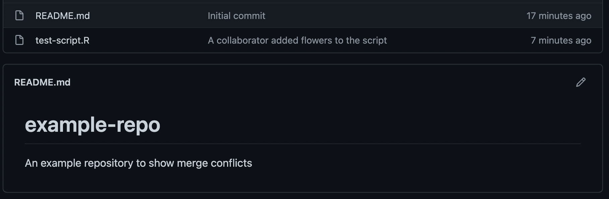
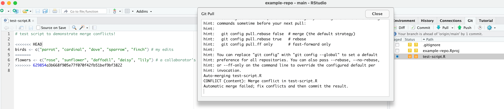
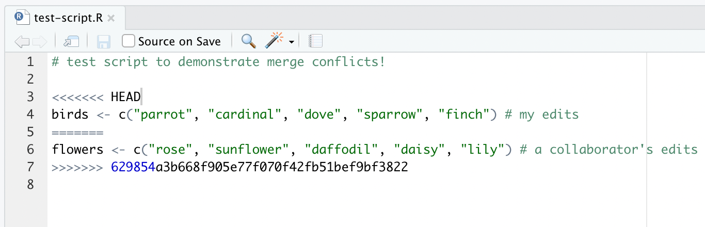
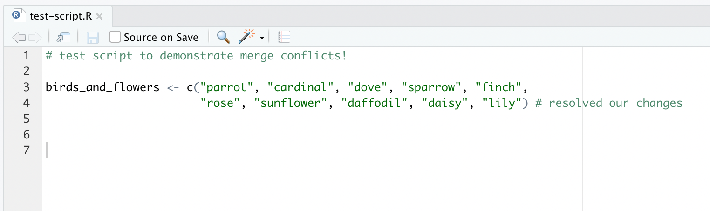
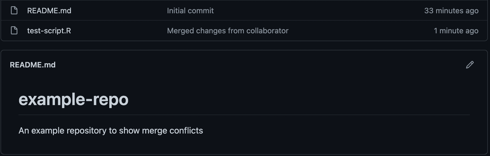
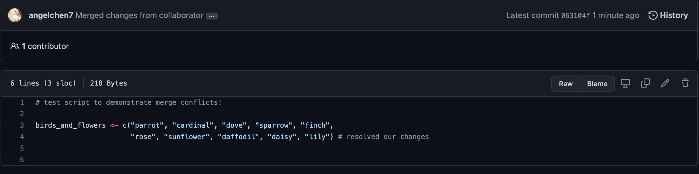

Conflicts
What is a Merge Conflict?
Merge conflicts are a normal part of the git workflow so don’t get discouraged when you run into them! They occur when git cannot figure out how to automatically merge new changes together. This can happen when you and your collaborators change the same lines in the same file without first pulling the changes that the other party has made.
Brief Overview of Merge Conflict Workflow
So the basic steps to resolving a merge conflict using RStudio are as follows:
When a conflict happens, your local file will automatically be modified to include both possible lines (wrapped in some formatting characters described in greater detail below)
Edit the lines in your file(s) that caused the merge conflict to your desired status
Commit those changes
Push your changes to GitHub
We can see those steps visually in the following workflow diagram:

How Merge Conflicts Happen
Below is a common scenario that can lead to merge conflicts and then the steps to address a conflict when it occurs.
Let’s say we have a repository that we’ve shared with a collaborator. Currently there’s a README.md and only one script, test-script.R, in it.

test-script.R contains one line. Suppose we want to work on this script and add more lines to it.

Let’s go commit our edits. The green lines highlight the fact that we’ve added two new lines to our script, lines 2 and 3. We type out our commit message, and click Commit.

Great! The message “Your branch is ahead of ‘origin/main’ by 1 commit” lets us know that everything is proceeding smoothly. Suppose that we decided to take a break and stepped away from our computer.

Then, unbeknownst to us, our collaborator made their edits to the same script and committed and pushed their changes to the GitHub repository. At the moment, here is what the shared repository looks like.

When we get back to our computer, we’re ready to push our changes to GitHub, but an error shows up. Basically, it is telling us that our GitHub repository contains changes that we do not have on our local computer. To remedy this, the message suggests that we pull the changes from GitHub to our machine to catch our local machine back up.

After clicking Pull, we get a new error message: “Merge conflict in test-script.R”.

Looking closer, the merge conflict prompted a new version of test-script.R to pop up. This version contains our edits and our collaborator’s edits, along with the delimiter lines that start with <<<<<<<, =======, and >>>>>>>. git is urging us to manually fix the conflicted lines before continuing.

Our file now has an U icon, which stands for an unresolved merge conflict.

In general terms the steps that come before a merge conflict are displayed in the visual below. Note that though this has visual similarity to the workflow diagrams throughout this bookdown we do not recommend intentionally causing a merge conflict :)

Resolving Merge Conflicts
So how do we resolve this merge conflict? We need to edit the script so that it looks like how we want it. We can either pick our lines to keep, our collaborator’s lines, some combination, or something new altogether. Be sure to communicate with your collaborator to discuss exactly how it should be fixed. After merging the changes wherever appropriate, delete the delimiter lines.

Then stage, commit the changes, and push them to GitHub!

Perfect! We’ve fixed the merge conflict!

Let’s check back on the shared repository. The latest commit shows that we’ve successfully pushed our changes to GitHub.


Navigating to the commit history, we see that first we committed our changes, then our collaborator committed and pushed their changes, causing a merge conflict since we were editing the same lines in the same file. To resolve this, we edited those lines directly in our RStudio and committed and pushed our changes once more. Finally, the merge conflict is resolved and all the necessary changes are merged.

Tips on Avoiding Merge Conflicts
Merge conflicts aren’t exactly fun, so here are some tips to avoid them:
- Communicate with your team members/collaborators often to avoid working on the same files at the same time! Let each other know who is working on what
- Commit often in small chunks
- Try pulling before committing